Beshbarmak (translated from Kyrgyz as "five fingers") is one of the most popular national dishes not only of the Kyrgyz but also of all nomadic peoples. Since ancient times, beshbarmak has been prepared during large "toys" (translated from Kyrgyz as "festival" or "feast") and served to honored and respected guests.
$10.99
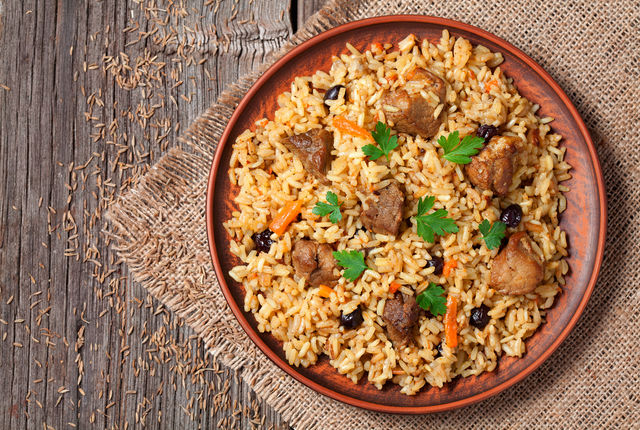
plov
Plov is a dish of Eastern cuisine, the basis of which is boiled rice (in exceptional cases, other cereals or small pasta products can be used). A distinctive feature of plov is its crumbliness, achieved by adhering to the specific cooking techniques for the rice and the addition of animal or vegetable fat to the plov, which prevents the grains from sticking together.
$9.99
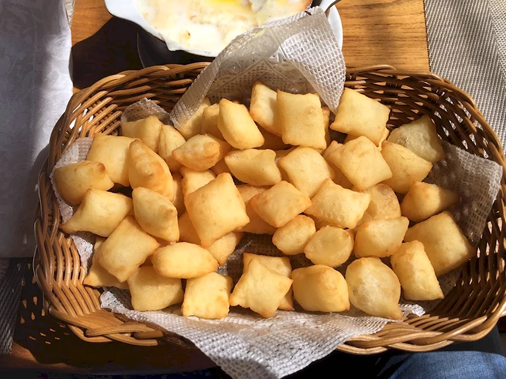
Boorsok
Boorsok is a traditional flour-based product of the peoples of Central Asia. Boorsok is a must-have treat in every Kyrgyz family. Boorsoks are served with tea, before meals, with kumys, with snacks, and with shorpo. Sliced pieces of rolled dough are fried in oil for 20-30 seconds, then transferred from the cauldron to a sieve or colander to allow the oil to drain properly.
$8.99
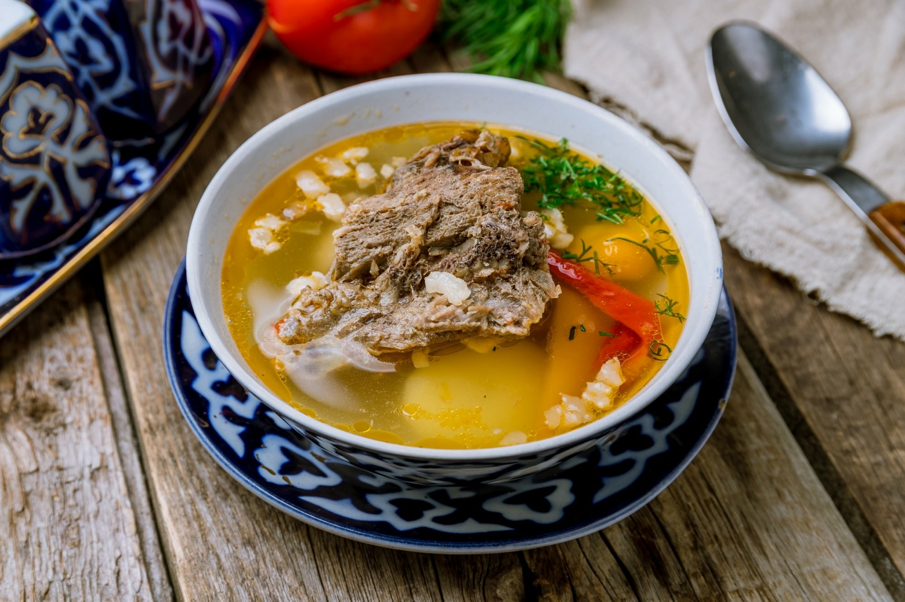
Shorpo
Shorpa, also known by various names such as "sorpo," "shurpa," "shurbo," "shorpo," and "sorpa," is a seasoned soup or meat broth found among Turkic peoples and Tajiks. It has spread across the Muslim East and among peoples neighboring the Turks and Tajiks. This dish is a staple in the culinary traditions of these regions, celebrated for its hearty flavors and nourishing qualities.
$11.99
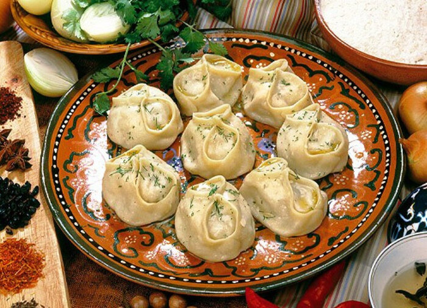
Manty
You're describing "manty," a traditional, predominantly meat-based dish popular among the peoples of Central Asia, Turkey, Mongolia, Korea (known as "mandu"), Russia, Tajikistan, Kyrgyzstan, Kazakhstan, Uzbekistan, and China. Manty consists of finely chopped meat, usually beef or lamb, wrapped in thinly rolled dough and steamed in a manty steamer.
$13.99
Besh Barmak
Beshbarmak (translated from Kyrgyz as "five fingers") is one of the most popular national dishes not only of the Kyrgyz but also of all nomadic peoples. Since ancient times, beshbarmak has been prepared during large "toys" (translated from Kyrgyz as "festival" or "feast") and served to honored and respected guests.
$10.99
plov
Plov is a dish of Eastern cuisine, the basis of which is boiled rice (in exceptional cases, other cereals or small pasta products can be used). A distinctive feature of plov is its crumbliness, achieved by adhering to the specific cooking techniques for the rice and the addition of animal or vegetable fat to the plov, which prevents the grains from sticking together.
$11.99
Boorsok
Boorsok is a traditional flour-based product of the peoples of Central Asia. Boorsok is a must-have treat in every Kyrgyz family. Boorsoks are served with tea, before meals, with kumys, with snacks, and with shorpo. Sliced pieces of rolled dough are fried in oil for 20-30 seconds, then transferred from the cauldron to a sieve or colander to allow the oil to drain properly.
$13.99
fast food
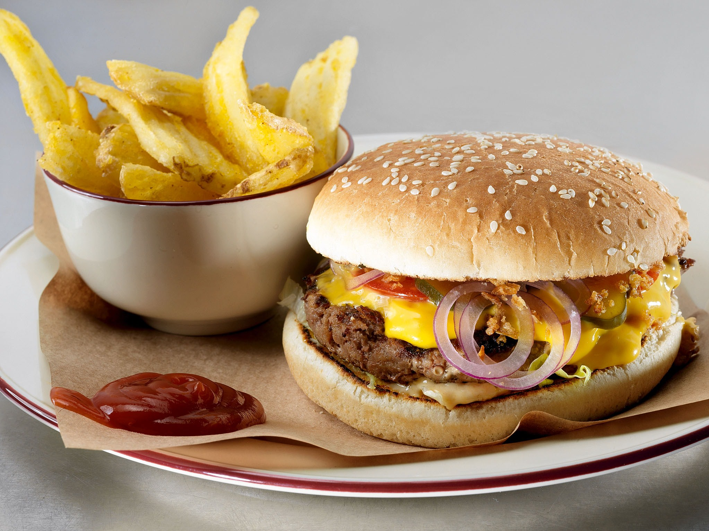
Burger
Burgers are one of the most beloved and iconic dishes in American cuisine, and they've gained popularity worldwide. These delicious sandwiches consist of a grilled or fried patty made from ground meat, typically beef, served between two slices of bread known as buns. Burgers are highly customizable, allowing for a wide variety of toppings and condiments to suit individual tastes.
$15.99
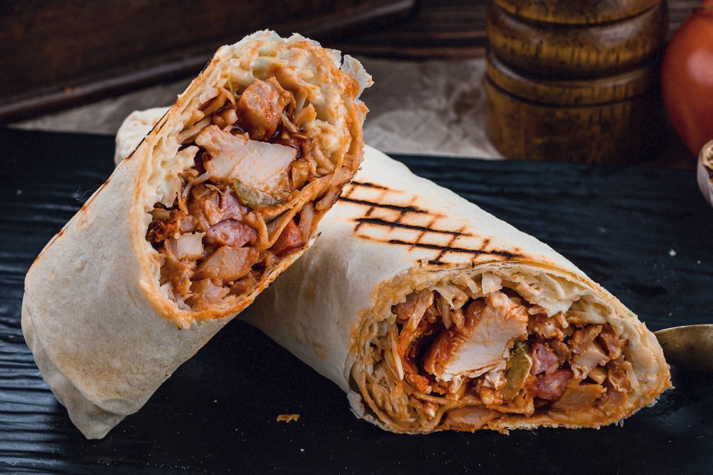
Shawarma
Shawarma is a popular Middle Eastern street food that has gained widespread popularity around the world. It consists of thinly sliced meat, typically lamb, chicken, beef, or a mixture of these meats, wrapped in a flatbread and topped with various condiments and sauces. The origins of shawarma can be traced back to the Levant region of the Middle East, particularly in countries like Lebanon, Syria, and Turkey.
$13.99
Pizza
Pizza is a beloved Italian dish that has become a global favorite. It consists of a round, flattened base of dough topped with tomato sauce, cheese, and various toppings, which is then baked in an oven. The origins of pizza can be traced back to ancient civilizations such as the Greeks, Egyptians, and Phoenicians, who made flatbreads with toppings. The modern pizza as we know it today originated in Naples, 18th century.
$16.99
Burger
Burgers are one of the most beloved and iconic dishes in American cuisine, and they've gained popularity worldwide. These delicious sandwiches consist of a grilled or fried patty made from ground meat, typically beef, served between two slices of bread known as buns. Burgers are highly customizable, allowing for a wide variety of toppings and condiments to suit individual tastes.
$15.99
Shawarma
Shawarma is a popular Middle Eastern street food that has gained widespread popularity around the world. It consists of thinly sliced meat, typically lamb, chicken, beef, or a mixture of these meats, wrapped in a flatbread and topped with various condiments and sauces. The origins of shawarma can be traced back to the Levant region of the Middle East, particularly in countries like Lebanon, Syria, and Turkey.
$13.99
Pizza
Pizza is a beloved Italian dish that has become a global favorite. It consists of a round, flattened base of dough topped with tomato sauce, cheese, and various toppings, which is then baked in an oven. The origins of pizza can be traced back to ancient civilizations such as the Greeks, Egyptians, and Phoenicians, who made flatbreads with toppings. The modern pizza as we know it today originated in Naples, 18th century.
$16.99
Desserts
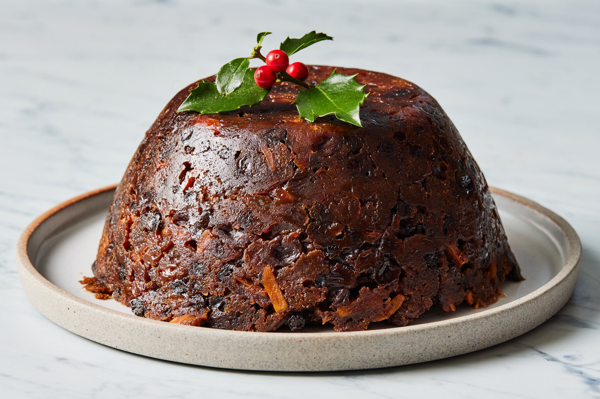
Figgy Pudding
Figgy Pudding is a traditional English dessert that is often associated with Christmas celebrations. Despite its name, it doesn't actually contain figs, but rather a combination of dried fruits, spices, and suet (beef or mutton fat). The pudding is typically steamed or boiled, resulting in a dense and moist texture, and is often served warm with a rich sauce.
$7.99
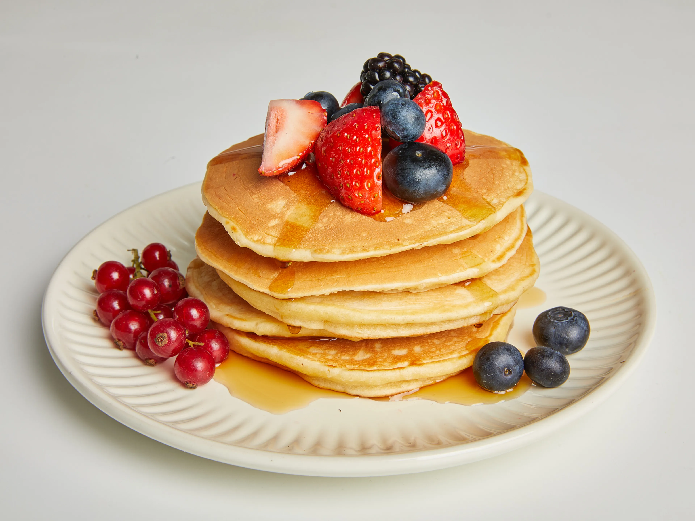
Pancake
Pancakes are a beloved breakfast food enjoyed around the world. These versatile and delicious treats consist of a simple batter made from flour, eggs, milk, and a leavening agent, such as baking powder or baking soda. The batter is poured onto a hot griddle or frying pan and cooked until golden brown on both sides, resulting in fluffy and flavorful pancakes that can be enjoyed with a variety of toppings and accompaniments.
$5.99
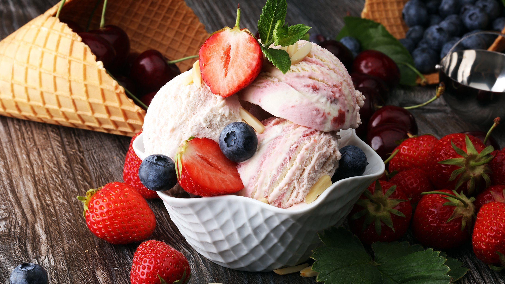
ace cream
Ice cream is a beloved frozen dessert enjoyed by people of all ages around the world. It consists of a mixture of cream, milk, sugar, and flavorings, which is churned and frozen to create a smooth and creamy texture. Ice cream is available in a wide variety of flavors and forms, making it a versatile and customizable treat. Ice cream comes in countless variations to suit different tastes and preferences.
$3.99
Figgy Pudding
Figgy Pudding is a traditional English dessert that is often associated with Christmas celebrations. Despite its name, it doesn't actually contain figs, but rather a combination of dried fruits, spices, and suet (beef or mutton fat). The pudding is typically steamed or boiled, resulting in a dense and moist texture, and is often served warm with a rich sauce.
$7.99
Pancake
Pancakes are a beloved breakfast food enjoyed around the world. These versatile and delicious treats consist of a simple batter made from flour, eggs, milk, and a leavening agent, such as baking powder or baking soda. The batter is poured onto a hot griddle or frying pan and cooked until golden brown on both sides, resulting in fluffy and flavorful pancakes that can be enjoyed with a variety of toppings and accompaniments.
$5.99
ace cream
Ice cream is a beloved frozen dessert enjoyed by people of all ages around the world. It consists of a mixture of cream, milk, sugar, and flavorings, which is churned and frozen to create a smooth and creamy texture. Ice cream is available in a wide variety of flavors and forms, making it a versatile and customizable treat. Ice cream comes in countless variations to suit different tastes and preferences.
$3.99
Drinks
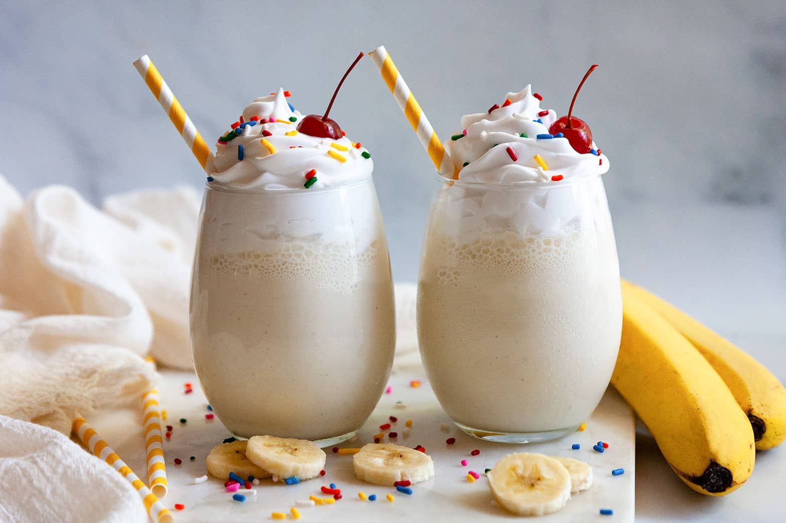
Milkshakes
Milkshakes are a classic and refreshing beverage enjoyed by people of all ages. They consist of a blend of milk, ice cream, and flavorings, which are mixed together to create a creamy and indulgent treat. Milkshakes are available in a wide variety of flavors and can be customized with different ingredients and toppings to suit individual tastes.
$8.99
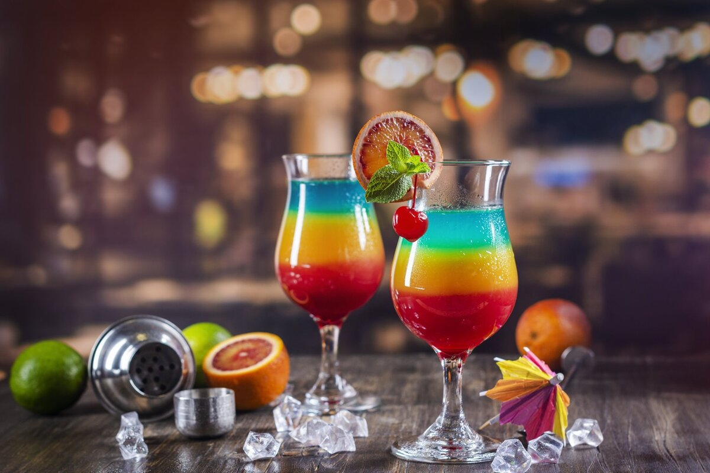
layerd cocktails
Layered cocktails, also known as "pousse-cafés" or "pousse-cafés," are visually stunning drinks that consist of multiple colored layers of different liqueurs or spirits. The layers are carefully poured into a glass so that they float on top of each other, creating a striking visual effect. Layered cocktails are often served in tall, narrow glasses to showcase the distinct layers.$4.99
Juice
Juice is a refreshing and nutritious beverage that comes in a variety of flavors and forms. It is typically made by extracting the liquid from fruits and vegetables, either through pressing, squeezing, or centrifugation. Juice can be consumed fresh or pasteurized and is available in both pure and blended forms. There are many types of juice, each with its own unique flavor.
$2.99
Milkshakes
Milkshakes are a classic and refreshing beverage enjoyed by people of all ages. They consist of a blend of milk, ice cream, and flavorings, which are mixed together to create a creamy and indulgent treat. Milkshakes are available in a wide variety of flavors and can be customized with different ingredients and toppings to suit individual tastes.
$8.99
layerd cocktails
Layered cocktails, also known as "pousse-cafés" or "pousse-cafés," are visually stunning drinks that consist of multiple colored layers of different liqueurs or spirits. The layers are carefully poured into a glass so that they float on top of each other, creating a striking visual effect. Layered cocktails are often served in tall, narrow glasses to showcase the distinct layers.
$4.99
Juice
Juice is a refreshing and nutritious beverage that comes in a variety of flavors and forms. It is typically made by extracting the liquid from fruits and vegetables, either through pressing, squeezing, or centrifugation. Juice can be consumed fresh or pasteurized and is available in both pure and blended forms. There are many types of juice, each with its own unique flavor.